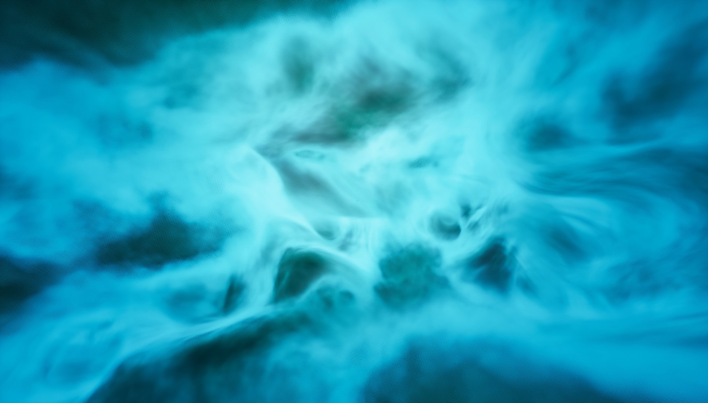
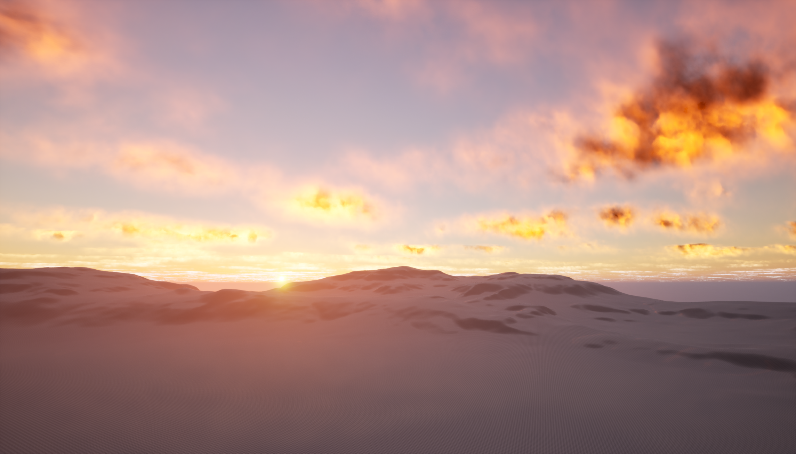
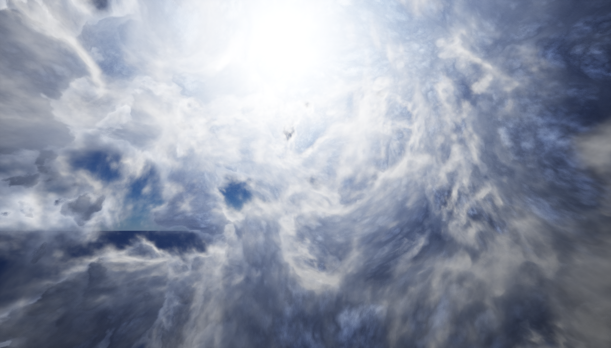
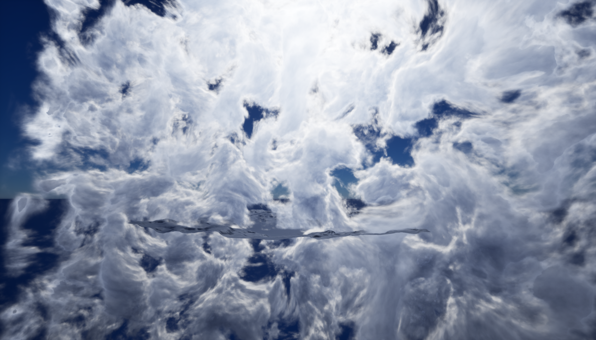

The goal of this project was to develop a flexible volumetric cloud shader in Unreal Engine.
The system is designed to support both small, localized effects and large-scale cloud formations, while remaining performant enough for real-time gameplay scenarios.
An additional requirement was portability.
The shader is implemented primarily using custom HLSL nodes rather than Unreal-specific volumetric features, making it easier to adapt the solution to other engines or rendering pipelines.










Specifications:
- Engine: Unreal Engine 5.6.1
- Material Domain: Surface
- Blending Mode: Premultiplied Alpha / Translucent / Additive
- Shading: Unlit
The cloud system is built around a single master material that contains all functionality.
From this, multiple material instances can be created, allowing users to quickly iterate on different cloud types through parameter adjustments.
The shader operates on standard geometry and works best when applied to front-face culled boxes, which define the bounds of the volumetric region.
These volumes can be freely translated, rotated, and scaled, and multiple instances can overlap to create more complex cloud formations.
Lighting and color are influenced both by scene lighting—primarily the DirectionalLight—and by artist-controlled parameters exposed in the material instance.
This enables a wide range of visual styles, from soft atmospheric clouds to more dramatic, high-contrast formations.
Shape & Structure: Controls the overall form and detail of the clouds, including noise scale, distortion, visibility threshold, and definition.
NoiseSize, NoiseDistort, CloudVisibility, CloudDefinition
Lighting & Color: Adjusts shadowing, tinting, and internal color variation within the volume.
ShadowValue, ShadowOffset, ShadowColor, TintColor, TintSpread, TintMultiplier, TintDefinition
Performance & Quality: Balances visual fidelity against runtime cost through step count, sampling distance, and level-of-detail behavior.
RaymarchSteps, StepSizeMultiplier, LOD_Distance, EdgeFadeOut
At each step, a procedural noise function is evaluated to determine local density. This density is integrated along the ray using a Beer-Lambert formulation, allowing the volume to accumulate opacity in a physically accurate way. Early termination is applied once the accumulated density reaches a threshold, improving performance without significantly affecting visual quality.

fBm function used to create multi-layered noises

Initially, each step for density accumulation was additionally executing steps towards light direction to accumulate shadows. This was later replaced with a more efficient approximation based on a directional derivative, which estimates light attenuation using a small number of offset samples along the light direction. This significantly reduces cost (instead of 6 fBm samples per step, it's 2 with current set-up) while preserving soft shadowing within the cloud.


Lighting is composed of multiple components. Direct lighting is driven by the scene's DirectionalLight, modulated by shadowing and a Henyey-Greenstein phase function to simulate anisotropic scattering. A secondary multiple-scattering approximation adds soft ambient light within dense regions, reducing contrast and improving perceived volume.